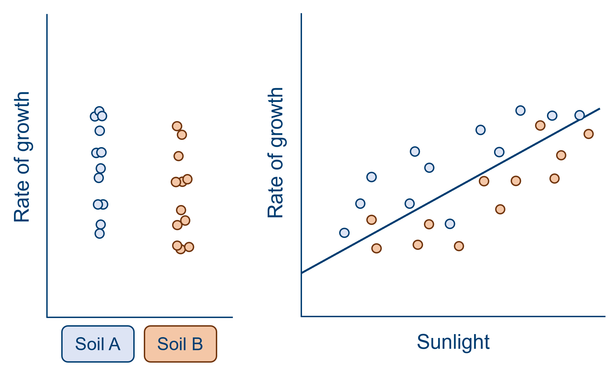
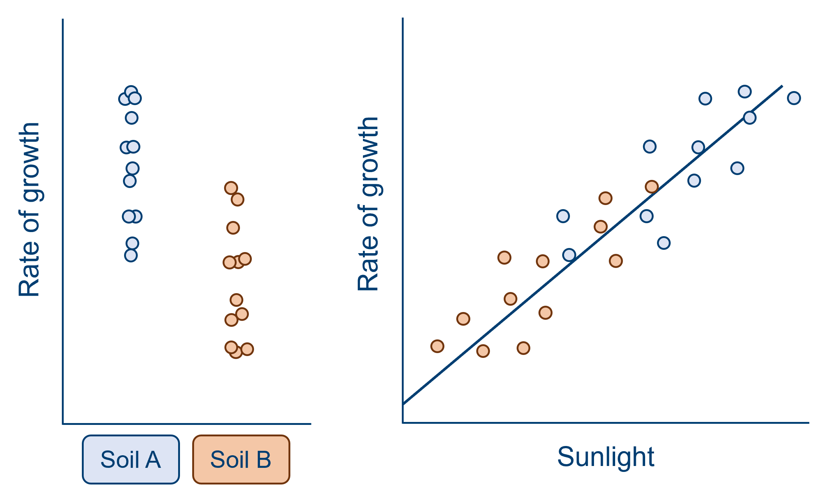
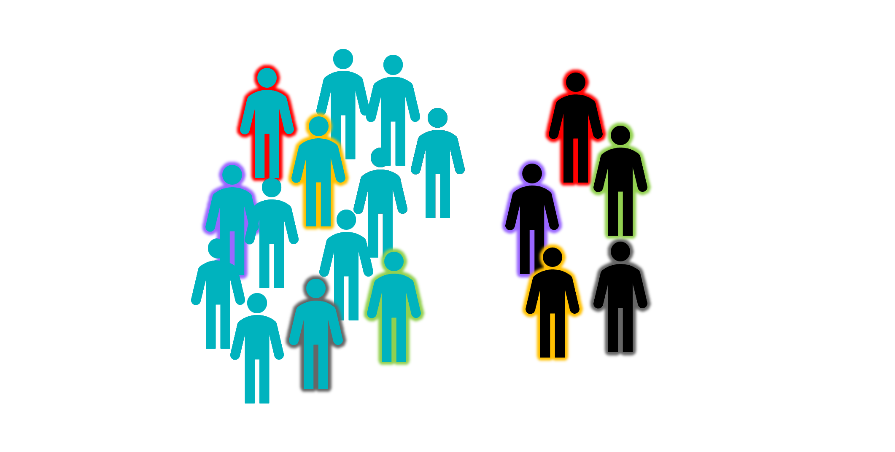
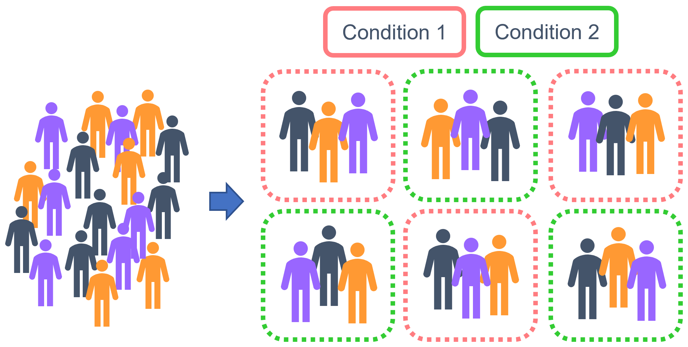
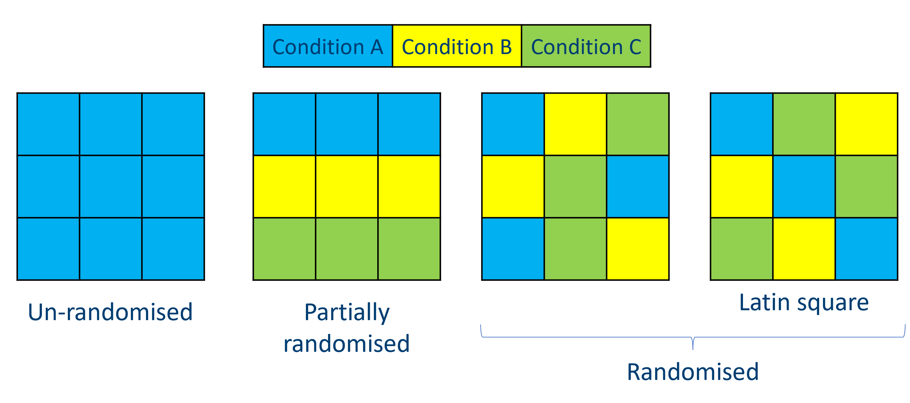
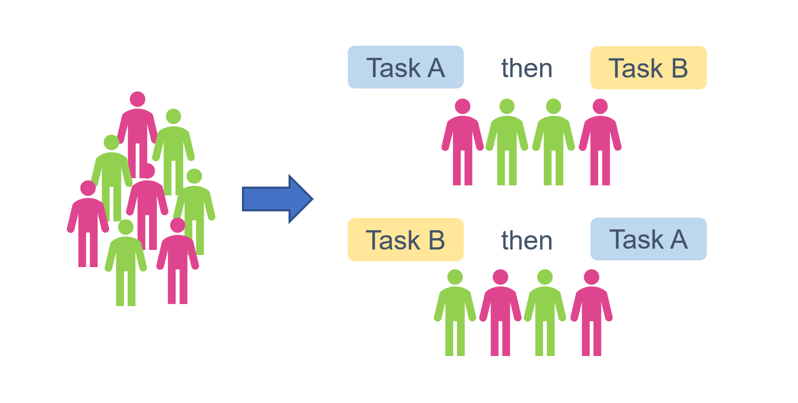
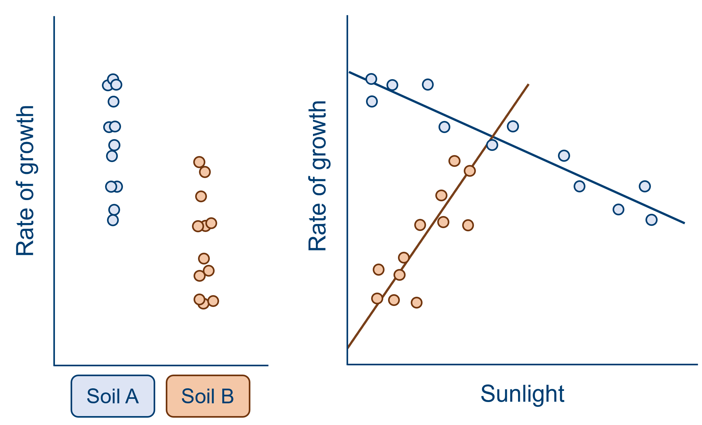

19 Confounds & bias
So far in the course, we’ve been using linear models to make statistical inferences about the likely relationships between variables in the real world. They’re super useful for this kind of inference. However, a statistical test is only as good as the dataset you perform it on, and the quality of the dataset will be determined by your experimental design.
One thing that can affect the reliability of the inferences you’re making, is bias or confounding variables in your dataset. This page talks about the sources of confounds, and methods you can employ in your experimental design to offset these.
19.1 What is a confounding variable?
A confound is a variable that covaries with both your predictor(s) and outcome variables, such that the relationship between the predictor(s) and outcomes is affected. Confounding variables (sometimes also referred to as extraneous variables) are often controlled for in research, wherever it’s possible to do so (in which case, you may also see them called control variables).
Let’s have a look at this visually, with an example, because that’s easier to wrap your head around!
A confound can obscure an effect of interest, as in the example below. When looking at the effect of soil type alone, it would appear that the difference between the two group means is very small, compared to the spread within the groups (remember that a t-test, along with other linear models, is more or less a signal-to-noise ratio!). However, we can see from the graph on the right that a great deal of this variation within the two groups is due to the effect of sunlight. In this sample, sunlight is a confounding variable that has contributed additional variance to our outcome response. When we take sunlight into account and eliminate some of this additional variance, we now see a consistent pattern - at all levels of sunlight, there is a higher rate of growth for soil A than soil B (split above and below the line of best fit).

A confound may also make it appear than the variable of interest has an effect, when in reality it does not. Consider an alternative version of the same example, below. Here, when we look at soil type alone, we see what seems to be quite a large effect, with quite a big difference between the group means relative to the spread within each group. However, when we also consider the effect of sunlight, it becomes clear that the effect of soil is artificial. Sunlight has varied systematically with soil type in this sample, such that plants in soil A have received notably more sunlight than soil B. The effect of soil type here is minimal, if it exists at all.

From both of these examples, we can see that the reason we need to worry about confounds is that they can cause us to misattribute variance in our analysis - making us over- or under-estimate the variance explained by one or more of our predictor(s). Modelling data is all about trying to correctly interpret the noise and variation that we see in our datasets, to try to find meaningful relationships between variables that hold true not only in our sample, but in the underlying population we’ve drawn from. So, there’s no wonder we worry about confounds!
19.2 Sources of confounds
Confounds and variation can come from a variety of sources, including:
- Batch effects
- Order effects
- Systematic measurement or technical error
- Demand characteristics & placebo effect
- Biased sampling & assignment to conditions
- Experimenter confounds
- Environmental confounds
Each of these is discussed in more detail below.
Batch effects
Batch effects refers to the variation that can occur between repeats or observations, usually introduced by equipment or technical factors. The most common example of batch effects in classical lab work are plate effects. Samples are grouped together in well plates (most commonly a 96-well plate), and there is often a great deal of variation between plates due to differences in the way they are handled and processed. (Within plates, there are also established row, column and edge effects, which can complicate matters even further!) Sometimes, these differences are larger than the differences observed between experimental conditions.
For those who find bench work less relatable: another example of batch effects is growing plants across multiple greenhouses for the same study. There may be systematic differences between greenhouses - perhaps some are south-facing, and others are east-facing; perhaps they are looked after by different research assistants, who aren’t consistent in the amount of water they give the plants. And within the greenhouses, plants near the edges will receive more light and have more space to branch out than those near the centre.
Order effects
Order effects may occur in repeated measures designs - i.e., when observations in your sample undergo more than one of the experimental conditions - and the order of conditions or treatments alters the effect those conditions have on the outcome variable.
Sometimes, this is because the conditions have unexpected interactions with one another; for instance, if you are testing the efficacy of two different drugs, but drug A blocks the effects of drug B, leading you to believe that drug B doesn’t work when in fact it could. Other times, it may simply be because participants become fatigued, and their performance declines over time (a particular problem if you’re asking people or animals to perform cognitive tasks like memory or puzzle solving), or the opposite might happen - participants might get better with practice.
Systematic measurement or technical error
This type of error may be generated by the researcher(s), for instance, if a batch of media for cell culture has been prepared incorrectly, or the wrong dosage of a drug has been given. Alternatively, equipment itself can be systematically incorrect or inconsistent, in a way that may covary with variables of interest. In functional MRI studies, for instance, researchers must contend with a phenomenon called “scanner drift”: a gradual decrease in signal intensity over the course of the scan.
This type of confound can be a particular problem in multi-site studies, e.g., clinical studies taking place across multiple hospitals, where the model and calibration of equipment is likely to differ.
Demand characteristics
This is a term borrowed from psychology, in which this type of confound is particularly prevalent. Demand characteristics refers to the unintended extraneous and environmental factors that might give human participants clues about what the experiment is about, and subconsciously change their behaviour in response.
Sometimes, this means that participants will actively try to behave in a way that confirms the experimenter’s hypothesis; other, more contrary folk like to try to “ruin” or “disprove” the hypothesis by behaving in the opposite way. Sometimes, people can get so wrapped up in the anxiety of being evaluated that they stop behaving normally, viewing the experimenter as an authority figure and trying to follow instructions to the letter. (If you’re curious how far this can go, there are several social psychology studies that investigated this phenomenon, back in those crazy days from before ethics committees existed; look up the Milgram experiments.)
In fact, you’re probably familiar with the placebo effect, which is a well-known example of how taking part in a study can alter participants’ responses. Simply believing that you’re being given a substance or treatment of some kind can lead to real, psychosomatic responses to something that doesn’t even exist.
Biased sampling & assignment
A key assumption of null hypothesis significance testing is that our sample is representative of the underlying population we’re trying to learn about. But there are lots of things that might make this untrue. It’s a well-known problem in psychology studies, for instance, that human participants who sign up for studies are often quite different from the general population - they’re usually university students with an interest in psychology. In clinical research, too, you may find that only a certain subset of patients are willing or able to take part (e.g., those who are able to travel, or those who are seeking experimental treatments). This can make it hard to generalise to the population of interest.
Even if your sample is truly randomly selected, it’s also possible to introduce confounds when assigning to different experimental conditions.
Experimenter effects
Being there to observe the science sometimes means that we accidentally (or even deliberately, but that’s a whole separate discussion) affect the science.
This can happen in a bunch of ways. One is the observer-expectancy effect, in which researchers subconsciously influence the experiment due to their own hypotheses or biases, and is especially prevalent in studies with human participants. This might involve asking leading questions or subconsciously give hints as to how to behave, as happened with the case of the famous “counting” horse, Clever Hans (I’ve put some info about him in the drop-down box below, mostly because it’s a cool story).
There is also the phenomenon of confirmation bias. Confirmation bias refers to our tendency to seek out information that confirms what we’re already thinking, and disregard or minimise evidence that goes against it. You can imagine how this might be problematic in research - especially if researchers think that they’re immune to it, which sadly, we are not.
And, of course, we have to consider the basic physical effects of being present as a researcher. People and animals will behave differently when there’s someone with a white lab coat in the room with them. Further, individual characteristics of the researcher may affect responses - for instance, it’s a known phenomenon that lab rats will behave differently or be stressed to different degrees when handled by male versus female researchers.
Hans was a horse who became famous around the turn of the 19th century in Germany for supposedly being able to count, among other skills (including working with fractions, telling time, reading calendars and even reading and understanding German). When asked a question, he would paw the ground with a hoof the appropriate number of times to give his response, and he was amazingly accurate.
Sadly, of course, Hans was not actually a genius horse performing all these tasks - he was getting his cues from his trainer and owner, Wilhelm von Osten. Hans was picking up on subtle changes in body language that let him know when to stop “counting”; this meant that he couldn’t answer questions that his owner didn’t know the answer to. Crucially, van Osten had no idea he was providing these cues at all, and truly believed his pony was just super smart.
The term “Clever Hans effect” has been coined in honour of the study on Hans performed by psychologist Oskar Pfungst, who uncovered what was really going on. The Clever Hans effect is an example of the observer-expectancy effect that most often crops up in studies of animal cognition.
Environmental confounds
This is something of a catch-all term, and you’ll notice that lots of the types of confounds described above could also be described as “environmental” confounds. Here, though, I’m talking specifically about random and unpredictable environmental effects that can’t really be controlled for.
We conduct experiments in some kind of physical space, and those spaces are rarely entirely under our control. Sometimes, stuff happens! Perhaps the fridge you’re using to store some of your samples happened to malfunction and got a bit too warm overnight without you realising. Perhaps some of the soil you’re using is too high in nitrogen. Perhaps the testing room was too hot, and the participants who came in for testing on those days were grumpy.
19.3 Dealing with confounds
Matched pairs designs and blocked randomisation to conditions
The aim of both of these methods is to assign participants or observations to experimental groups, while keeping those groups as similar to one another as possible. Often, this is to make sure that demographic variables like gender or age don’t differ systematically between groups.
A matched pairs design would be used in situations where you as the researcher don’t have any control over how the groups are split. For instance, if you’re comparing patients to healthy controls, you don’t get to assign people to groups - the groups already exist in the environment. What is typically done in these situations is to start with the experimental or patient group, and find a control that matches each of them (for factors like age, gender, education level, and any other possible confounds). This can be quite time consuming, and often requires having a pool of controls to choose from, but it does ensure that there aren’t any systematic differences between the groups that might obscure or exaggerate a real effect of the predictor variable(s).

Blocked randomisation can be used in situations where you as the researcher do control which observations or participants are assigned to which group. The first step is to construct blocks within your sample, each of which is broadly representative of the sample as a whole (with respect to the variables that you want to control for). These blocks are then assigned randomly to conditions, which ensures that the sample is stratified.

Randomisation
Randomisation is a relatively broad term in experimental design - it can refer to random selection of the sample, or random allocation to conditions, which has been discussed above.
Randomisation can be particularly useful in avoiding batch effects, and/or predictable, systematic environmental effects. It essentially involves “mixing” replicates of the different conditions across batches (whether these batches constitute well-plates, greenhouses, clinical sites and so on), rather than having only one condition per batch. This means that any environmental or experimenter variables that affect the batch, will affect replicates of all the conditions similarly. If it’s done properly, randomisation allows us to estimate the variation that’s due to batch differences, and leave behind the variation that’s due to our predictor variable(s) of interest.
An example of how randomisation can help to eliminate unwanted batch effects can be found in this blog post discussing the GenADA study on Alzheimer’s by GSK.
 The figure above shows a simplified version of how we might use randomisation. On the far left, we have a batch in which all replicates are from a single condition - this is something we absolutely want to avoid. Our two examples on the right are randomised, where conditions are mixed up between rows and columns; on the far right, we have a special example of such randomisation that we call a Latin square, in which each condition is replicated only once on each row and in each column (I think of it like a sudoku puzzle).
Of course, it’s not always possible to completely intermingle your replicates like this. Sometimes, attempting to perfectly randomise every single replicate can lead to errors - lab work is a good example of this, since pipetting randomly into a well-plate can really increase the chance of experimenter error, which may be more damaging than the batch effects you were trying to avoid. As a compromise, partially randomised designs may work instead, as shown in the middle left. Although we still have potential row effects here, we have at least avoided the issue of only including one condition per batch!
Counterbalancing
The primary use of counterbalancing is to prevent order effects. In a repeated measures design, the sample can be “counterbalanced” such that the conditions are presented in a different order to different subsets of that sample.
When counterbalancing, your sample should be equally divided across the counterbalanced conditions/groups; further, within each experimental group, that subset of the sample should also be equally divided across the counterbalanced groups to avoid any systematic bias. This means that the assignment to counterbalanced groups ends up being pseudo-randomised.
Here’s a visualisation to help explain what that might look like. The sample has a total n = 8, and is split into two experimental groups (let’s pretend we’re interested in the effect of pink versus green). We want each person to perform two different tasks, but we want to make sure that if they’re getting tired after the first one, or if the first task somehow biases their answers to the second, that we’re not disproportionately seeing the impact on Task B. So, we have two different possible task orders, creating two counterbalancing groups/conditions. We assign an equal number to each of those conditions, and further, we have an equal stratification of pink versus green within each of those conditions:

Blinding
In a single blind protocol, participants are aware which condition they have been assigned to. Of course, the majority of experiments in the life sciences are single blinded, since things like cell cultures, plants, receptors, enzymes etc. aren’t anywhere close to sentient enough to figure things out about the experiment they’re in. This technique is mainly used for studies with human participants, where the control group(s) are given a placebo or sham treatment, such that the overall experience is as close as possible to that of the experimental group.
In a double blind protocol, often considered to be the best choice for studies such as clinical trials, both the participant and the experimenter are blind to which condition the participant has been assigned to. In addition to eliminating placebo effects, this also means that the researcher cannot subconsciously influence the results (e.g., by treating groups differently).
Data analysis can also be blinded - i.e., the data is collected and analysed by different researchers. This helps to remove influences of confirmation bias.
Covariates of no interest
Sometimes, there is no good way of mitigating a confound in your experimental design. All is not necessarily lost, however, because in some of those cases, you can include a confound as a covariate of no interest in your model.
There are two things that need to be true to be able to include a confound as a covariate of no interest:
It needs to be continuous.
Exactly as it says on the tin - only continuous variables can be included as covariates of no interest in a model.
The confound cannot interact with any of your predictors of interest.
If there’s a significant interaction between the covariate and any of your predictors, then it can no longer be considered “of no interest”. Let’s revisit the soil type and sunlight example from the top of this page to explain why. In both of the scenarios I showed earlier, there is no interaction between soil type and sunlight - the effects are additive. This means it’s nice and simple to chuck sunlight into the model and let R/Python figure out how much variance to subtract, and what’s left over is for the predictor(s) you really care about.
However, in scenarios such as the one below, this wouldn’t work:

The effect of soil type on growth isn’t now simply being obscured by sunlight - it depends on it. We now need to talk about sunlight in order to be able to describe the effect of soil type. We can no longer discard sunlight as a covariate of no interest.
This isn’t necessarily a bad thing, though. This has told us something interesting about plant growth, and indicates that we really should have been thinking about sunlight from the beginning.
So, how do you actually include a covariate of no interest in a model?
Good news! It’s incredibly easy. You’ve probably even done it before without realising.
It’s as simple as including the covariate of no interest in the model as if it were any other predictor (though, depending on the exact function you’re using, you may need to ensure that you include it as the first term in the model). And, don’t forget to check for an interaction with other variables by visualising your dataset first.
19.4 Summary
- A confounding variable covaries with the predictor(s) and outcome variables
- There are multiple sources of confounds, including the environment, researcher or technical error, and features of the sample
- Many confounds can be controlled for using techniques such as randomisation, blinding, or matched samples
- Some confounds can be accounted for during analysis, by including them as covariates of no interest in the model